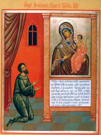

Помочь храму
Доброхотно дающего любит Бог.
(2 Кор. 9;7)
Дорогие братья и сестры! Этот раздел постоянно обновляется, возможно именно Ваша помощь будет
необходима завтра!
Очень много хлопот и забот в храме. Постоянно требуются рабочие руки для благоустройства и
поддержания порядка в храме и на прилегающей к храму территории.
Уборка храма и территории
Чистота в храме достигается путем регулярного мытья полов и церковной утвари и тут важен
посильный вклад каждого, кто хоть раз согласился помочь убрать храм.
Каждому, кто захочет помочь, найдется своя, как правило, необременительная работа. Не
стесняйтесь обращаться за свечной ящик или к труждающимся на территории храма.
По возможности приносите рабочую одежду, чтобы не запачкать свою парадную!
Трапезная
Женщин, желающих потрудиться во славу Божию, приглашаем помочь на кухне. В храме нет
постоянного повара.
Помогать можно и у себя дома
Также нужна помощь в стирке полотенец, скатертей из трапезной.
Сайт
Нашему сайту нужен новый дизайн и его последующее внедрение на современной системе управления
сайтом. Приглашаются к сотрудничеству дизайнеры и вебмастера.
Нужды храма:
На приходе всегда нужны:
- Белая бумага формата А4 для принтера
- Сменные картриджи для принтера HP Laserjet Pro 400 Color M451dn
- Папки, файлы
- Чистые диски СD-R, DVD-R
Для трапезной всегда нужны:
В богослужебные и праздничные дни при храме организовано благотворительное питание для многодетных семей и всех нуждающихся.- Рис
- Гречка
- Макароны
- Рыбные, мясные, овощные консервы
- Молоко и молочные продукты (вне поста)
- Яйца (вне поста)
- Овощи: картофель, морковь, свекла, капуста, лук
- Соль
- Сахар
- Печенье, конфеты и т.д.
- Для просфор нужны «живые» дрожжи, для выпечки хлеба – сухие дрожжи.
Хоз.нужды:
- Стиральный порошок «Tide», «Ariel»
- Пятновыводитель «Vanish»
- Кухонные полотенца
- Столовая клеенка 10-15 м
- Новые матрасы, одеяла, подушки, спальные мешки
- Средство для мытья деревянных полов
- Лампочки 60, 75, 100 Вт
- Туалетная бумага, салфетки
- Электрический чайник, термопот
- Разделочные доски
- Пакеты для мусора, фасовочные пакеты.
Сад и огород:
- Веерные грабли с черенками
- Черенки (отдельно)
- Пленка для парника, спанбонд, белый укрывной нетканый материал.
- Рукавицы, перчатки
- Садовые тележки
- Посадочный материал (по договоренности):
Воскресная школа:
В храме действует воскресная школа для детей. Регулярно проводятся праздники, организован детский кукольный театр, проводятся занятия по изобразительному искусству, игры на свежем воздухе.- Цветная бумага и цветной картон
- Цветные карандаши, фломастеры
- Пластилин
- Клей-карандаш
- Альбомы и т.д.
- Спортивный инвентарь (мячи, прыгалки и др.)
Ежемесячно храм отправляет посылки пожизненно заключенным. Для этого необходимы:
- Зубные щетки и паста
- Средства до/ после бритья (не содержащие спирт, желательно крем)
- Трусы муж. р.52-56.
- Носки муж.р.29, теплые носки
- Мужское теплое нижнее белье (4 комплекта)
- Мыло хозяйственное/туалетное
- Майки, футболки
- Банные полотенца
- Конверты, марки
- Сгущенка
- Сухое молоко
- Мед в пластиковой таре
- Сухофрукты, орехи
- Каши быстрого приготовления, сух.кисель.
- Сух.травы: зверобой, ромашка, мята и т.д.
- Лекарства: Альмагель С, Экзодерил, поливитамины и т.д.
Список необходимого на сайте будет регулярно обновляться.
СПАСИ ВАС ГОСПОДЬ!
Икона дня

Икона Божией Матери ''Нечаянная Радость''.
Православный календарь
14 мая 2023 г. ( 1 мая ст.ст.), воскресенье.
Неделя 5-я по Пасхе, о самаряныне (икона).
Прор. Иеремии (икона). Прп.
Пафнутия (икона)
Боровского. Прмч. Ваты Персянина. Блгв.
Тамары (икона), царицы Грузинской. Сщмч. Макария (икона), митр. Киевского. Прп. Герасима
(икона) Болдинского. Прмчч. Афонских Евфимия, Игнатия и Акакия. Мц. Нины.
Царевококшайской или Мироносицкой, Андрониковской (икона), и именуемой "Нечаянная
Радость" (икона) икон Божией Матери.
Евангельские чтения дня
Утр. - Ев. 7-е, Ин., 63 зач., XX, 1-10. Лит. - Деян., 28
зач., XI, 19-26, 29-30. Ин., 12
зач., IV, 5-42.